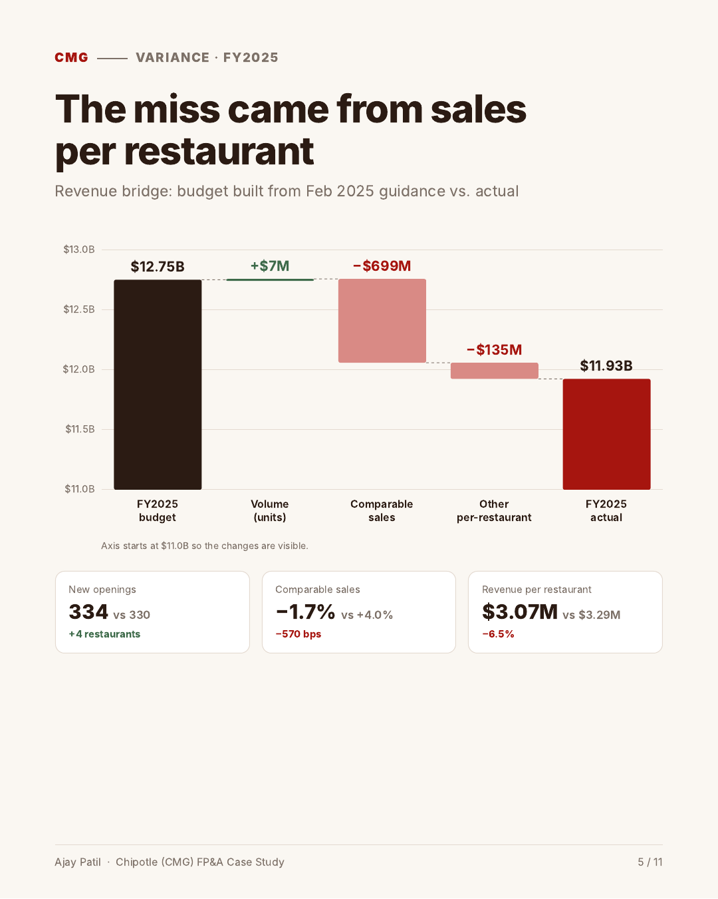
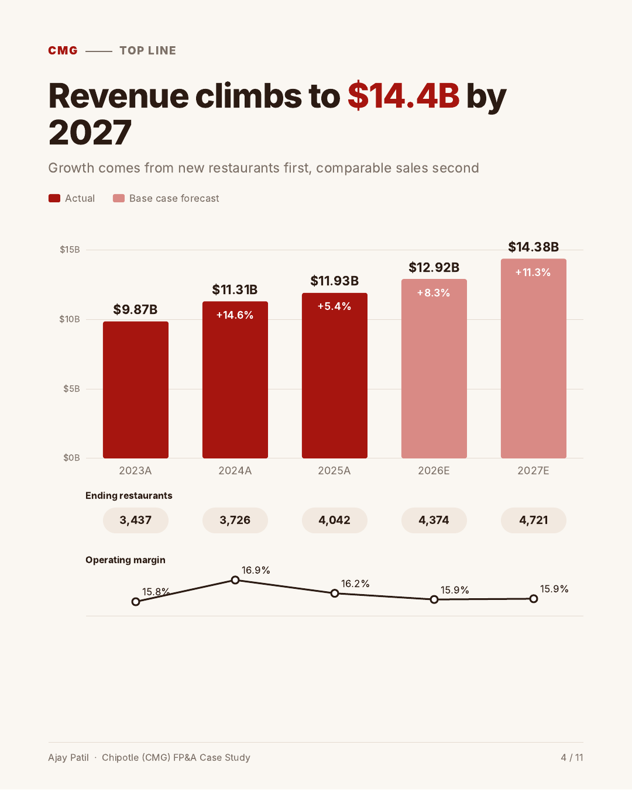
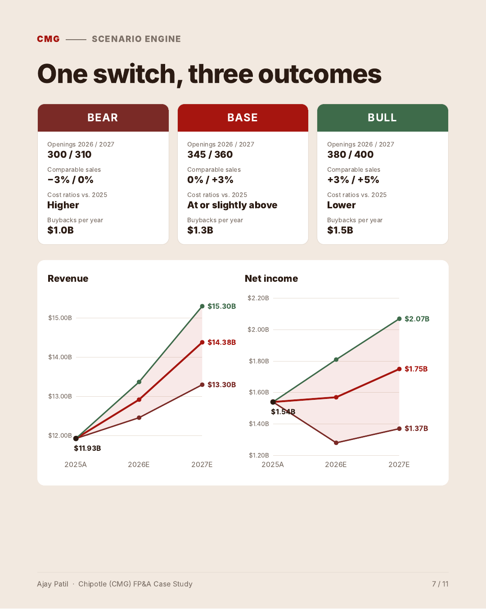
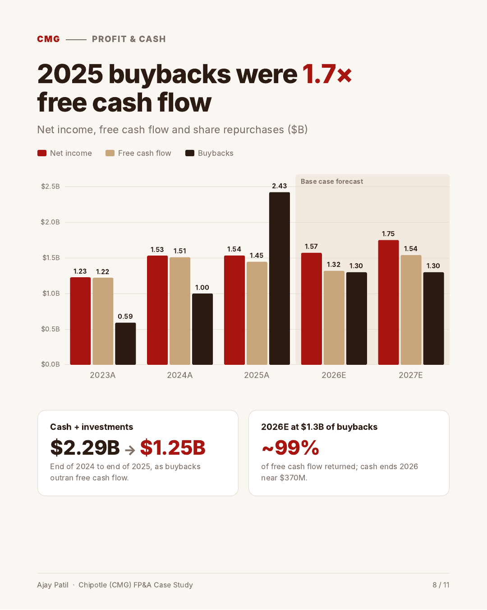
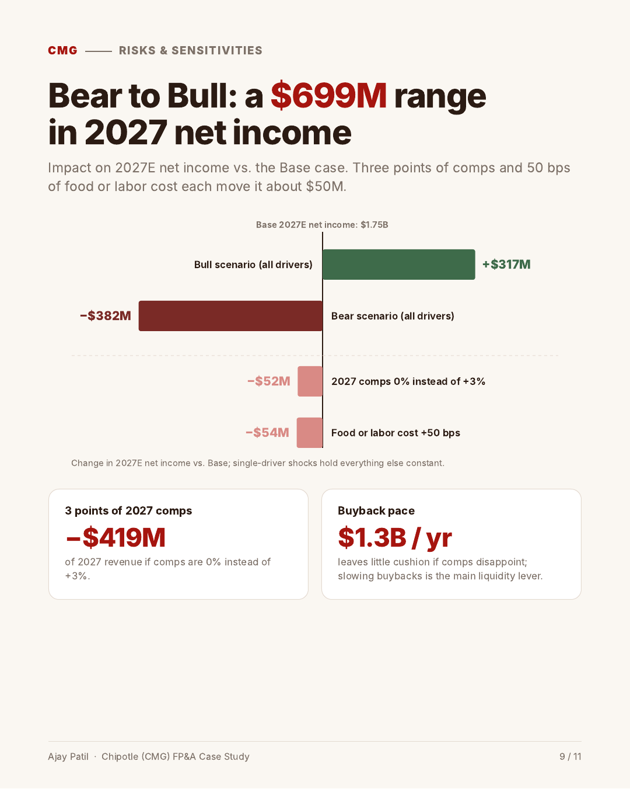
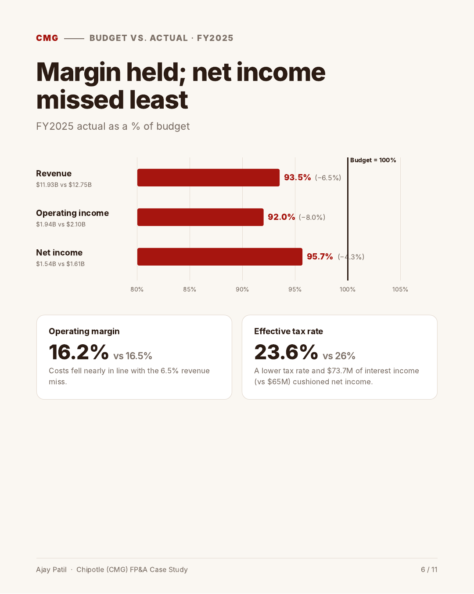
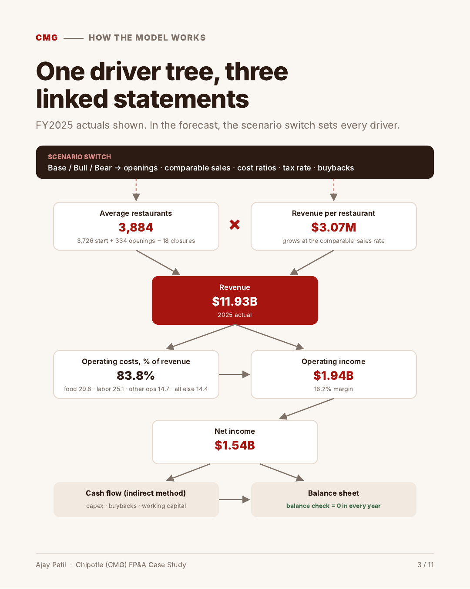

A fully linked income statement, balance sheet and cash flow model built by hand from Chipotle's FY2025 Form 10-K, with a FY2025 budget-vs-actual variance bridge, a 2026–2027 forecast and a one-switch Base / Bull / Bear scenario engine.
Chipotle opened more restaurants than planned in 2025 but still missed a budget built from its February 2025 guidance.
Volume added $7M; comparable sales (−1.7% vs. +4.0% budgeted) cost $699M; other per-restaurant effects cost $135M.
Only 27 bps below the 16.5% budget. Net income of $1.54B missed by $70M (−4.3%), helped by a 23.6% tax rate vs. 26% budgeted.
About 8% unit growth a year, flat comparable sales in 2026 and +3% in 2027. Net income reaches $1.75B.
$2.43B repurchased against $1.45B of free cash flow; cash plus investments fell from $2.29B to $1.25B.
Click any chart to enlarge it. All figures come from the Excel model.






FY2023–FY2025 income statement, balance sheet, cash flow and restaurant counts, transcribed from Chipotle's FY2025 Form 10-K.
Revenue = average restaurants × revenue per restaurant, which grows at the comparable-sales rate. Costs are modeled as a % of revenue.
Net income, capex, buybacks and working capital flow through an indirect-method cash flow; cash is the balancing item. The balance check is zero in every year and scenario.
One cell flips Base / Bull / Bear and re-runs openings, comparable sales, cost ratios, tax rate and buybacks across 2026–2027.
A budget-vs-actual bridge for FY2025, a Power BI dashboard (8 DAX measures) and a written FP&A memo.

Base case. Guidance = tied to Chipotle's published outlook; my assumption = my own estimate.
| Input | Base | Basis | Type |
|---|---|---|---|
| 2026 new openings | 345 | Feb 2026 guidance: 350–370 incl. 10–15 international partner-operated | GUIDANCE |
| 2026 comparable sales | 0% | Feb 2026 guidance: "about flat" | GUIDANCE |
| Tax rate | 25% | Midpoint of 24–26% guidance before discrete items | GUIDANCE |
| 2027 openings / comparable sales | 360 / +3% | Continued ~8% unit growth; recovery after a flat 2026 | MY ASSUMPTION |
| Cost ratios | 83.5% | Food, labor, occupancy, other, G&A and D&A as % of revenue, at or slightly above 2025 | MY ASSUMPTION |
| Capex | $1.5M | Per new restaurant, plus $290M a year for existing restaurants and corporate | MY ASSUMPTION |
| Buybacks | $1.3B / yr | Policy input; cash is the balancing item | MY ASSUMPTION |
| FY2025 budget | 330 · +4.0% | Openings and comparable sales from Feb 2025 guidance; 26% tax (guidance midpoint); 16.5% margin is my assumption | GUIDANCE + MINE |
Simplifications: operating leases, investments and other long-term items held at 2025 levels; stock-based compensation flat; share count and EPS not modeled.
MS Finance (STEM) at The University of Texas at Dallas, graduating December 2026. Interested in FP&A and corporate finance roles.